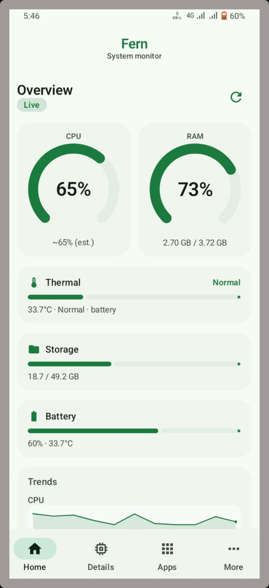
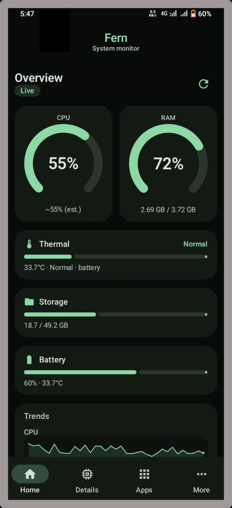
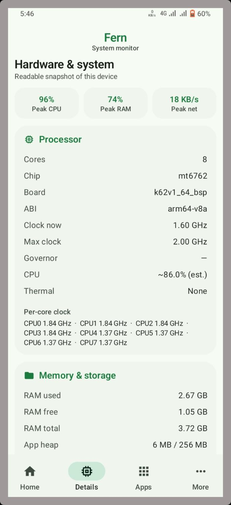
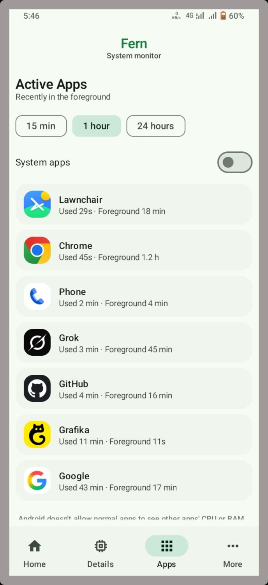
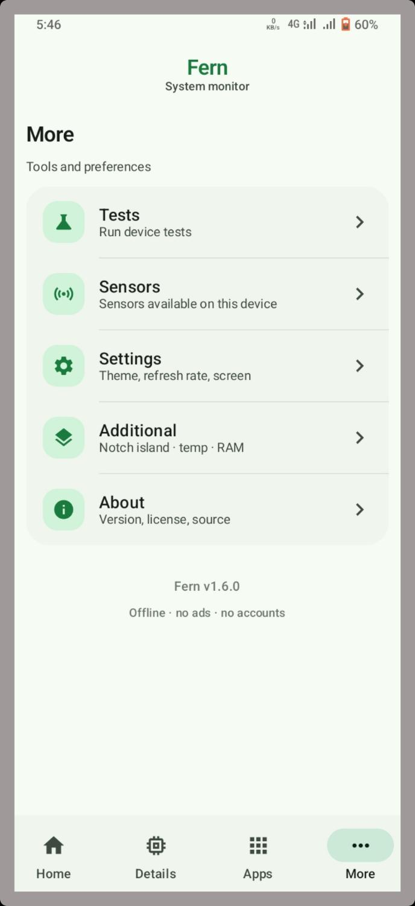

CPU & RAM
Live usage gauges, load estimates, memory used vs total, and trend sparklines.
Fern is a free Android system monitor — CPU, RAM, thermal, battery, storage, and active apps. Material 3 design, no ads, no accounts. Fully offline after install.

Built for quick checks: live gauges on Home, hardware snapshot in Details, optional elevated access when you need more.
Live usage gauges, load estimates, memory used vs total, and trend sparklines.
Battery temperature and thermal status. Advanced mode can read real zones via Shizuku or root.
Charge level, temperature, and internal storage — clear bars, no clutter.
Recently in the foreground. Optional Usage access; data stays on device.
Tests, sensors, settings, notch island overlay, and About — one clean tab.
No internet permission for core monitoring. No tracking. Advanced mode only if you enable it.
Soft green Material 3 — day or night.




Stays on this page — fetches the latest GitHub Release and saves the APK to your device. Android 8.0+.
Everything people search for about Android system monitoring and Fern.
Fern is an open-source Android system monitor focused on clarity: live CPU percent, RAM used/total, battery level and temperature, storage fill, thermal status, and recently active apps. It targets users who want a lightweight alternative to bloated “phone cleaner” apps.
Unlike many utility packs, Fern’s core metrics work offline with no account and no ads. The UI follows Material You / Material 3 with a distinctive green palette in light and OLED-friendly dark themes.
People search for “CPU usage Android”, “RAM monitor APK”, and “live system stats” when games lag or phones heat up. Fern shows dual gauges on the Home tab, optional trend sparklines, and a Details tab with cores, clocks, chip, and memory breakdown.
Fern surfaces battery °C alongside charge level and a thermal status bar. On many devices, battery temperature is the most accessible heat signal without root. With optional Advanced mode (Shizuku or root), Fern can read additional thermal information for a more accurate Home thermal bar.
Fern’s Additional settings include a notch-style floating island that can show temperature and RAM in a compact Material 3 pill — useful while gaming or recording. Display-over-other-apps permission is required for the overlay.
Advanced mode is off by default. When enabled and connected through Shizuku (recommended) or root, Fern can unlock deeper metrics such as real thermal zones and richer per-app memory on the Active Apps tab. Shizuku never runs until you install it, start it, and grant Fern.
Fern does not require an internet permission for core monitoring. There are no accounts and no ad SDKs in the described product positioning. Optional Usage Access is only for the Active Apps list and stays on-device.
Source code and release history: github.com/wized2/Fern.
Is Fern free? Yes — free and open source under MIT.
Min Android version? Android 8.0 (API 26)+.
Does it clean RAM automatically? No. Fern monitors; it does not force-kill apps in basic mode.
Where is the official APK? GitHub Releases, linked from this site’s download button.